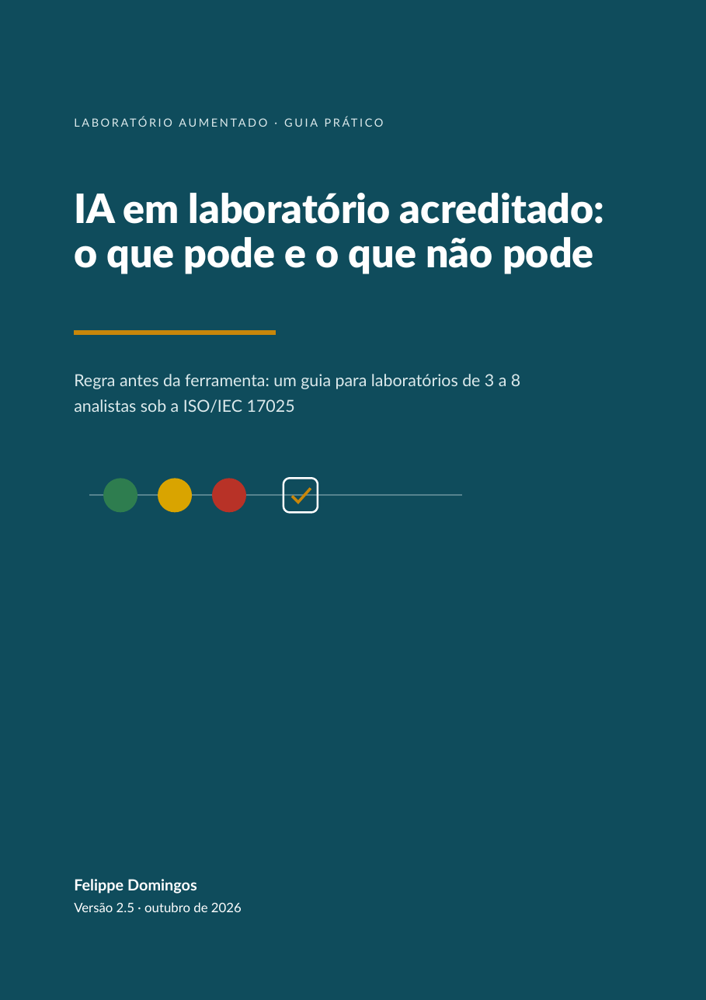

Um guia para quem responde por um laboratório de 3 a 8 analistas sob a ISO/IEC 17025 e sabe que a equipe já usa IA, mas ainda não escreveu a regra.

Numa enquete que fiz com profissionais da qualidade, 14 de 24 disseram que, onde trabalham, cada um usa IA por conta própria, sem regra. Em laboratório acreditado isso pesa mais, porque confidencialidade, registros técnicos e controle de dados são requisitos auditados, e não boas práticas.
Escrevi este guia para que essa regra caiba em uma página e possa ser implantada em uma semana, sem esperar aprovação de orçamento para começar.
O que pode entrar numa ferramenta de IA, o que só entra sem identificação e o que nunca entra.
Cálculo de resultado, decisão de conformidade e laudo, e um teste simples para os casos de fronteira.
Um modelo pronto para preencher e assinar com a equipe, com checklist de anonimização e registro de uso.
Você confirma o e-mail e o guia chega logo em seguida.
Sou Felippe Domingos, engenheiro químico. Há mais de vinte anos acompanho implantações de sistemas em laboratórios de controle de qualidade, e aprendi que a tecnologia, sozinha, raramente determina o resultado. O que determina é a ordem: entender como o laboratório trabalha, padronizar, e só então escolher a ferramenta.